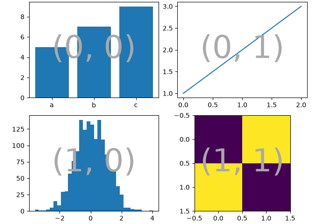

matplotlib.figure.Figure.subplot_mosaic#
- Figure.subplot_mosaic(mosaic, *, sharex=False, sharey=False, width_ratios=None, height_ratios=None, empty_sentinel='.', subplot_kw=None, per_subplot_kw=None, gridspec_kw=None)[source]#
Build a layout of Axes based on ASCII art or nested lists.
This is a helper function to build complex GridSpec layouts visually.
See Complex and semantic figure composition (subplot_mosaic) for an example and full API documentation
- Parameters:
- mosaiclist of list of {hashable or nested} or str
A visual layout of how you want your Axes to be arranged labeled as strings. For example
x = [['A panel', 'A panel', 'edge'], ['C panel', '.', 'edge']]
produces 4 Axes:
'A panel' which is 1 row high and spans the first two columns
'edge' which is 2 rows high and is on the right edge
'C panel' which in 1 row and 1 column wide in the bottom left
a blank space 1 row and 1 column wide in the bottom center
Any of the entries in the layout can be a list of lists of the same form to create nested layouts.
If input is a str, then it can either be a multi-line string of the form
''' AAE C.E '''
where each character is a column and each line is a row. Or it can be a single-line string where rows are separated by
;:'AB;CC'The string notation allows only single character Axes labels and does not support nesting but is very terse.
The Axes identifiers may be
stror a non-iterable hashable object (e.g.tuples may not be used).- sharex, shareybool, default: False
If True, the x-axis (sharex) or y-axis (sharey) will be shared among all subplots. In that case, tick label visibility and axis units behave as for
subplots. If False, each subplot's x- or y-axis will be independent.- width_ratiosarray-like of length ncols, optional
Defines the relative widths of the columns. Each column gets a relative width of
width_ratios[i] / sum(width_ratios). If not given, all columns will have the same width. Equivalent togridspec_kw={'width_ratios': [...]}. In the case of nested layouts, this argument applies only to the outer layout.- height_ratiosarray-like of length nrows, optional
Defines the relative heights of the rows. Each row gets a relative height of
height_ratios[i] / sum(height_ratios). If not given, all rows will have the same height. Equivalent togridspec_kw={'height_ratios': [...]}. In the case of nested layouts, this argument applies only to the outer layout.- subplot_kwdict, optional
Dictionary with keywords passed to the
Figure.add_subplotcall used to create each subplot. These values may be overridden by values in per_subplot_kw.- per_subplot_kwdict, optional
A dictionary mapping the Axes identifiers or tuples of identifiers to a dictionary of keyword arguments to be passed to the
Figure.add_subplotcall used to create each subplot. The values in these dictionaries have precedence over the values in subplot_kw.If mosaic is a string, and thus all keys are single characters, it is possible to use a single string instead of a tuple as keys; i.e.
"AB"is equivalent to("A", "B").Added in version 3.7.
- gridspec_kwdict, optional
Dictionary with keywords passed to the
GridSpecconstructor used to create the grid the subplots are placed on. In the case of nested layouts, this argument applies only to the outer layout. For more complex layouts, users should useFigure.subfiguresto create the nesting.- empty_sentinelobject, optional
Entry in the layout to mean "leave this space empty". Defaults to
'.'. Note, if layout is a string, it is processed viainspect.cleandocto remove leading white space, which may interfere with using white-space as the empty sentinel.
- Returns:
- dict[label, Axes]
A dictionary mapping the labels to the Axes objects. The order of the Axes is left-to-right and top-to-bottom of their position in the total layout.
Examples using matplotlib.figure.Figure.subplot_mosaic#

Complex and semantic figure composition (subplot_mosaic)